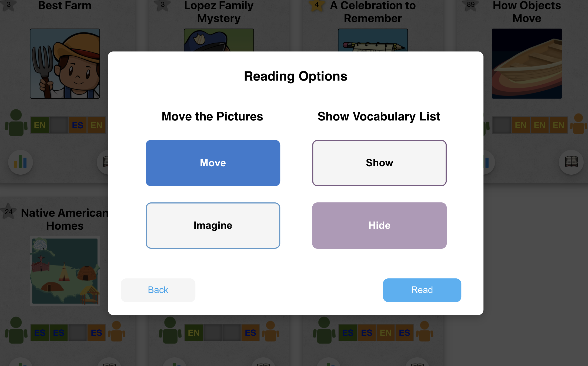
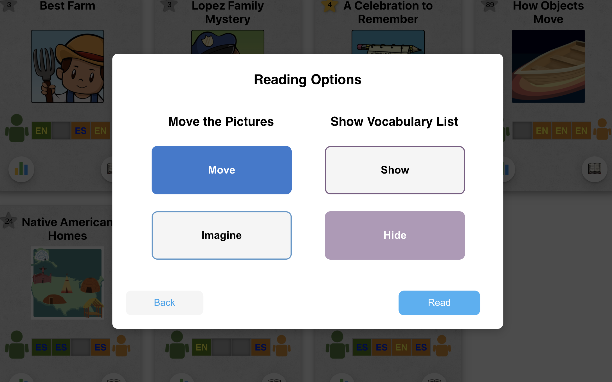

EMBRACE
Parent Dashboard
It's an intelligent iPad
tutoring app
that aims to foster parent-child dialogic reading and, in effect, the reading comprenhension of child dual-language learners. Parent readers get notifications and help from the app that encourage them to ask various conversation-inducing questions.
PublicationThe EMBRACE
parent dashboard
serves primarily as a personal informatics tool to help parents understand their reading habits and question-asking behaviors, and show whether or not they are fulfilling the app's requirements.
Research Abstract
-
Design parent dashboard using pencil and paper
-
Present the designs (i.e. sketches) in various lab meetings for feedback
-
Create interview questions and script for pilot study
-
Prototype the dashboard
-
Develop using React JS
Create a parent dashboard that organizes and presents users’ reading behavior to help them self-monitor as well as encourage them to adjust their behavior, such as ask more and a variety of dialogue-inducing questions.
Design Challenge
Present complex information in a clear, compact and simplified form, requiring minimum effort for the user to understand their progress. This can be accomplished by reducing the number of clicks and words users have to read to understand their progress.
Information to be displayed on the dashboard were:
- Number of questions asked for each question type (Abstract, Concrete, Relational)
- Time spent on reading a book
- Whether the users fulfilled the app’s minimum requirement (minimum requirement: each reader should read in each language at least once, with a combined total of four readings for each book)
From Scratch
to Fruition
At the outset, I made sure to understand the research requirements and the
information we want to
collect and display in the dashboard.
I, then, sketched my design ideas and presented them during
lab meetings (a group of PhD and Master's students),
one-on-one meetings with my resesarch advisor, and team meetings (a group of graduate students and
professors working on EMBRACE), where I explained goals that I want to achieve through the design
and explained my reasoning for my design choices.
From the get-go, I knew that graphs will be my close friends. But the challenge was that I had to
visually communicate statistical information to users who may not have strong educational background.
So I explored different graphs and created a few drafts of the initial design.
For the first draft, I organized the number of questions asked by the Parent user in a pie chart, with
the total shown in the center [Req. 1]. I used a bar graph for the number of readings in each language
since there are only two categories (English or Spanish) [Req. 3]. All these took up one page per
book.
Areas for improvement:
The first draft, however, required a lot of scrolling to see the information for books that were
towards the bottom of the list.
What changed:
I created a navigation bar with links to all the books. Clicking on any of the books displays the
details of the book on the screen. By default, the interface displays the overall statistics across
all books when users first land on the page.
Areas for improvement:
The drawback of the second draft was that the user was unable to compare reading performances for
different books side by side.
What changed:
I dedicated a section of the dashboard to displaying the question statistics bar graph for all books
so that users can easily compare the statistics between different books. And when user clicks on the
book name below the graph, a modal shows up further breaking down the statistics into chapter level.
Feedback:
- 1. Regarding Iteration 3 of Design 1, some people in my team thought there are too many graphs for users to digest and they can potentially be overwhelming.
- 2. I was also informed that we don’t need to show the statistics at the chapter level.
- 3. One suggestion was to possibly show all the information on the same page instead of bringing up a modal to reduce number of clicks to close windows.
What Changed:
In response to the feedback: to reduce the number of graphs, I removed the summary statistics bar
graph and placed a carousel on the left side of the screen next to the book menu with three
slides: one slide showing the questions asked (pie chart) [Req. 1], one showing the reading
requirement statistics (bar graph and pie chart) [Req. 3] and one showing the total time spent on
reading the book (number) [Req. 2]. This got rid of the modals and displayed the statistics on the
same page. Also, I removed the feature for chapter level statistics.
Feedback:
My team wanted me to emphasize and ensure that users are reaching the app-recommended goals.
Now, one of the challenges was visually communicating the app’s recommended requirement, whether users are meeting the requirement and the progress thereof [Req. 3]. I extracted out the Requirement 3 feature from the overall UI and drafted a few designs.
What changed:
For each book, specified in the middle column, I showed the Parent’s number of readings as a single
bar graph that extends towards the left and the Child’s towards the right. In this design, how far
each bar is reaching outwards is a visual representation of how much of the reading requirements are
fulfilled by the Parent and the Child.
This time around, I had a more clear idea of what purpose the dashboard is to serve. But of course, the challenge was using the limited space efficiently, in a way that displays all necessary information in the most compact form possible, in an organized and digestible manner.
What changed:
I revamped the previous design and came up with a flip card design, dedicating a card to each book.
Since there are two sides to each card and multiple cards can fit in a screen, this improved space
efficiency. I placed the content of higher interest to the user on the front side and statistics on
the back side. The only graph displayed is for the number of questions asked. I used icons like avatar
and flags to represent users and language a book was read in.
Feedback:
- 1. I got a feedback which expressed a concern about the use of country flags to represent language, which could be controversial. So our team decided to use EN for English and ES for Spanish.
- 2. The team wanted to integrate direct links to each book in the dashboard so users can start reading any time while in the dashboard.
- 3. For the minimum requirement, both Parent and Child don’t have to read in English and Spanish. Each just has to read at least once, and at least once in Spanish and once in English (regardless of the reader) and in total 4 times.
Each book and its information are displayed in a flip card.
Front side shows the requirements, besides the book title and its image. The languages are represented in
flags. A star will show up to the left of the book title to indicate that the number of readings have been
fulfilled.
Bigger human icon represents Parent reader, and smaller Child reader.
For the pilot study, our team used this prototype to conduct user interviews with 5 - 6 interviewees.
Interview ScriptMost of the interviewees understood the different features of the design, and what each design element indicated. One interviewer thought it would be helpful to include the books’ reading levels, or to order the books based on the levels. Additionally, the same interviewer suggested displaying the total number of times both users read the book.
What changed:
Our team agreed that that the two suggestions given by an interviewer would be useful information from
users’ as well as
personal informatics standpoint. So I sorted the book cards in the ascending order of the reading
level and included the
total number of readings inside a star icon which lights up in yellow when requirements are met.
My research team and I were very satisfied with the final design. Personally, I thought the requirement area on the front side of the card was very compact but clearly communicated users’ progress and whether or not they fulfilled it. And users can conveniently compare the question statistics between books by flipping the cards over. Importantly, the user interviewees did not have hard time figuring out what different parts of the UI indicated. So I went ahead and implemented it in React!
The final design shows each book's information in a flip card, in which the front side
shows the information identifying the book (e.g. title, image) and a visual representation
of the minimum requirement we want our users to fulfill for our study's data collection
purposes. The minimum requirement bar gets filled starting from either end, depending on who read.
The first and last bars are reserved for the parent and the child reader, respectively, as the it is
required
that each read at least once. And the star next to the book title shows the quantity of readings, and
the color turns yellow when the users have met the requirement for number of readings.
The back side of the card shows numerical data: the number of questions asked for each question type
and the cumulative time spent reading the book.
Using React JS
 
